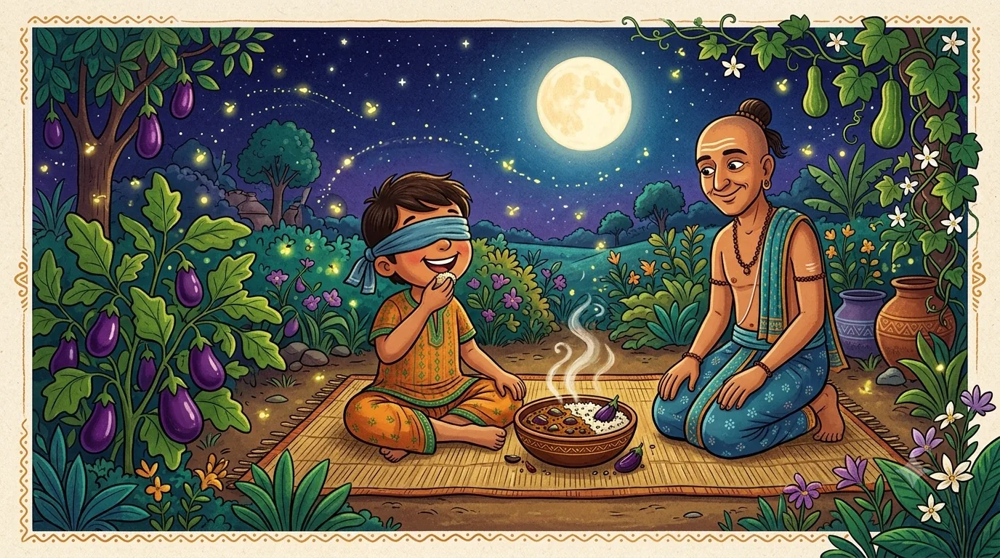

Tale FourThe Secret of the Brinjal Curry
“A promise you have never once thought about is only a habit wearing a promise's coat.”
In one corner of the royal garden grew a very special plant. It was a rare kind of brinjal — the shiny purple vegetable some children call eggplant or aubergine — and these particular brinjals were so tender and so tasty that the king guarded them like jewels. Only the royal cook was allowed to pick them, and the curry made from them was the most delicious dish in the whole kingdom.
Now, a very respected holy man was visiting the court just then, and he was rather proud of a vow he had taken long ago: never, ever, would a single bite of brinjal pass his lips. "And my son follows the very same vow!" he announced grandly. "We are far too disciplined for such things." He said it so often, and so proudly, that the king began to wonder — was it true wisdom, or just a boast?
The king turned, of course, to Tenali Raman. "Find out," he said with a twinkle, "whether that fine vow is made of wisdom — or only of words."
A moonlit invitation
Tenali did not argue with the holy man or call him names. Instead he invited the man's son to a special treat. "Young sir," said Tenali warmly, "I have cooked a rare and secret royal curry — but its recipe is such a secret that you must eat it blindfolded, here in the moonlit garden, so you cannot peek at what makes it so fine. Will you trust me?"
The boy, who loved an adventure and a good meal, happily tied on the blindfold. Tenali set before him a steaming bowl of the famous curry. The boy took a bite — and his eyes went wide behind the cloth. "Oh!" he gasped. "This is the most wonderful thing I have ever tasted! What is it?" And he ate every last spoonful, scraping the bowl.

A charming children's-book illustration in South-Indian folk-art style, moonlit garden at night: a happy boy sitting on a mat with a soft cloth blindfold over his eyes, joyfully eating a steaming bowl of curry with his hand, a blissful smile on his face. Around him grow leafy plants heavy with shiny purple brinjals (eggplants). Tenali Raman kneels nearby with a warm, gentle, knowing smile. Big round moon, fireflies, jewel tones of indigo, teal, purple and marigold. Cosy and kind, no text baked into the image. Target size ~1280×720px, 16:9 landscape; keep the boy and Tenali centred with safe margins — the art is letterboxed into a 16:9 box, so keep nothing important near the edges.
Generate this with your image agent, then drop the file here.
The secret revealed
The next day at court, Tenali Raman bowed low before the proud holy man. "Respected sir," he said kindly, "your son enjoyed a fine curry in the garden last night. He called it the most wonderful dish in the world. It was made, I am afraid, entirely of the royal brinjals."
The holy man's face went as purple as the vegetable itself. His son had broken the great vow — and had loved doing it! But Tenali did not laugh at him. Instead he said, gently, so only the wise would hear the true lesson: "You see, sir, a promise means very little if we keep it only because we have never once been tempted, or because a blindfold can undo it. A vow is only strong when we understand why we made it. Perhaps a little less boasting, and a little more thinking, would serve us all."
The king smiled into his beard. The holy man, red-faced but a touch wiser, boasted a good deal less after that day.
Do not boast about promises you have never had to keep. A rule you follow blindly is easily undone — real strength comes from understanding why you choose to do the right thing.